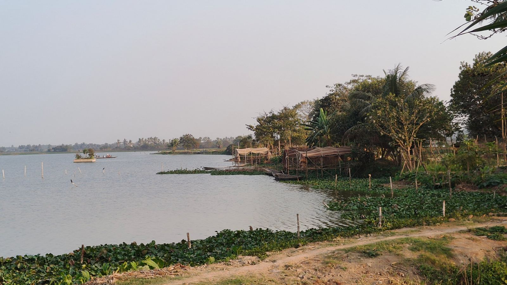
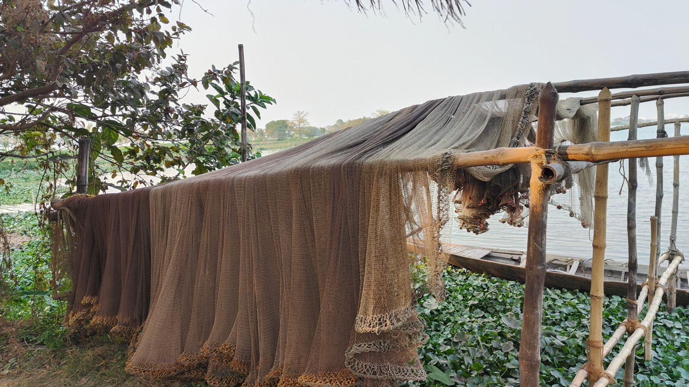
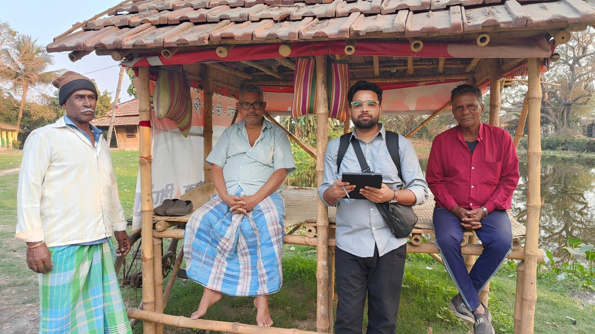
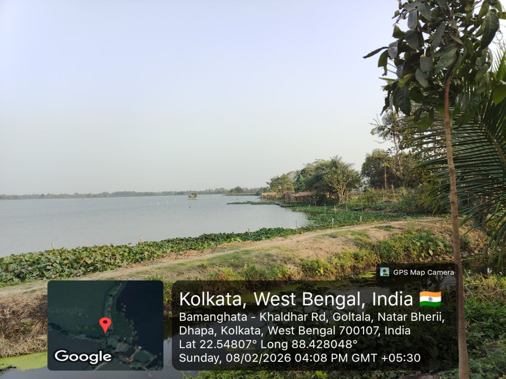
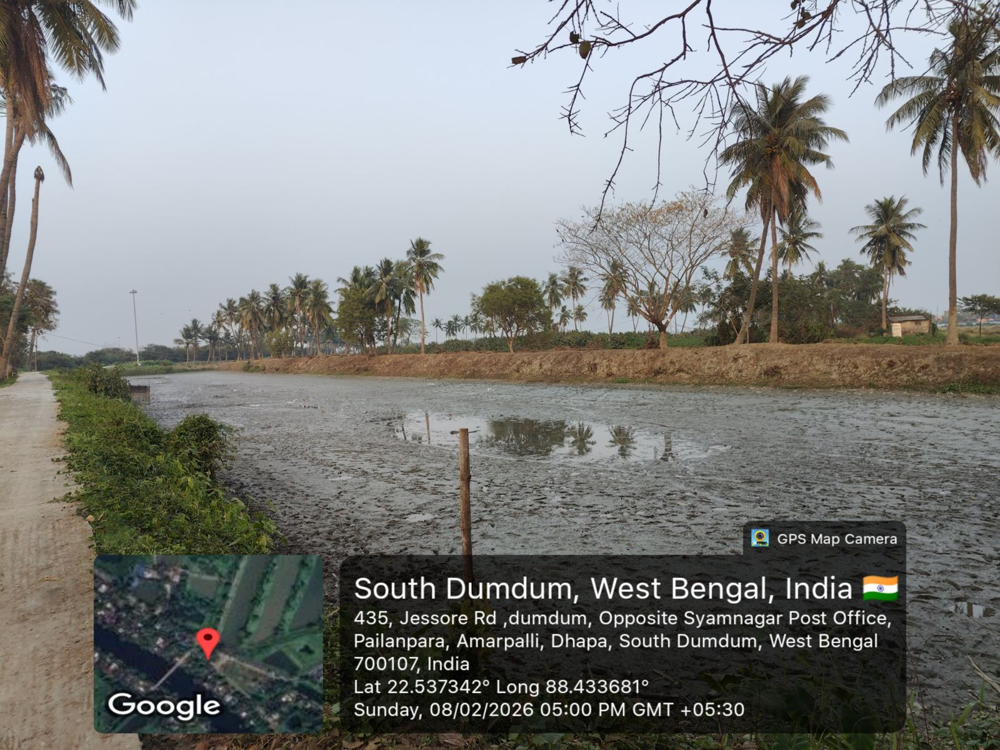
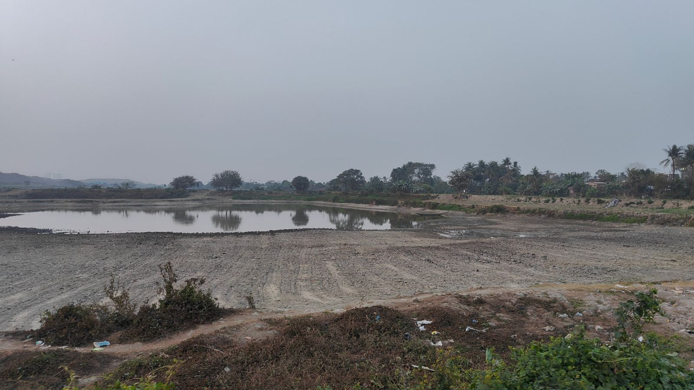

Field Work Gallery
Moments from my fieldwork in the East Kolkata Wetlands, a Ramsar site where city, water and livelihoods meet. Click any photo to see it full size.

Bamboo shelters and boats along a fishing bheri, East Kolkata Wetlands

Fishing nets drying beside a bheri, a daily part of wetland livelihoods

Field interaction with local fishers on wetland livelihoods and change

Natar Bheri, Dhapa, East Kolkata Wetlands, February 2026

A drained bheri near Dhapa, February 2026: pond management or loss?

A shrinking water body, showing the pressures wetlands face from urban growth